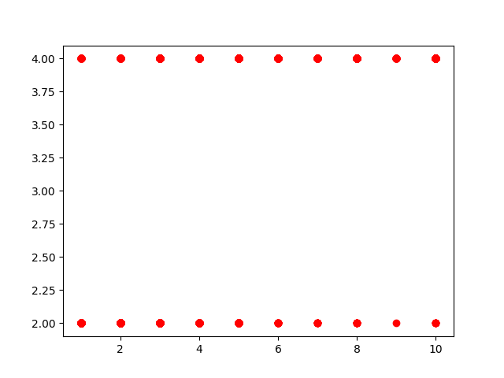

First of all we need to remove the Data that have missing values.
We have 9 Features, we calculated the regression for this features, and save the result of them in Results Data
Now we should analyze every feature data 1. bareNuclei p-value is 0.000 so this feature is significant
clump thickness p-value is 0.000 so this feature is significant
uniformity of cell size p-value is 0.000 so this feature is significant
uniformity of cell shape p-value is 0.000 so this feature is significant
marginal adhesion p-value is 0.000 so this feature is significant
single epithelial cell size p-value is 0.000 so this feature is significant
bland chromatin p-value is 0.000 so this feature is significant
normal nucleoli p-value is 0.000 so this feature is significant
mitoses p-value is 0.000 so this feature is significant
As you see our data you understand that all of our data X are 1 or 2 or 3, ...or 10 , and all y are 2 or 4 so our coefficient will be so small because y to x ratio is small. and all figures for our features are like this , because all plot is just 20 point, and it's because of our data set 
As we see in Linear Regression all features were significant, but if we want to know that if the features are truly significant and the effects are not from other features, we calculate the multiple regression with these features and we face with this
All features multiple regression result
Dep. Variable: class R-squared: 0.843
Model: OLS Adj. R-squared: 0.841
Method: Least Squares F-statistic: 402.5
Date: Wed, 10 Oct 2018 Prob (F-statistic): 4.46e-264
Time: 20:24:42 Log-Likelihood: -303.90
No. Observations: 683 AIC: 627.8
Df Residuals: 673 BIC: 673.1
Df Model: 9
Covariance Type: nonrobust
coef std err t P>|t| [0.025 0.975]
const 1.5047 0.033 45.807 0.000 1.440 1.569
clumpThickness 0.0634 0.007 8.898 0.000 0.049 0.077
uniformityOfCellSize 0.0437 0.013 3.428 0.001 0.019 0.069
uniformityOfCellShape 0.0313 0.012 2.508 0.012 0.007 0.056
marginalAdhesion 0.0165 0.008 2.065 0.039 0.001 0.032
singleEpithelialCellSize 0.0202 0.010 1.924 0.055 -0.000 0.041
bareNuclei 0.0908 0.006 14.091 0.000 0.078 0.103
blandChromatin 0.0384 0.010 3.802 0.000 0.019 0.058
normalNucleoli 0.0371 0.007 4.981 0.000 0.022 0.052
mitoses 0.0020 0.010 0.197 0.844 -0.018 0.021
So the mitoses and singleEpithelialCellSize have p-value > 0.05 then these are insignificant features and we can remove them and again calculate the multiple linear regression with other 7 features and get these. and prob(F-statistic) is significant, this means at least one feature has relationship with response.
All significant features multiple regression result
Dep. Variable: class R-squared: 0.842
Model: OLS Adj. R-squared: 0.841
Method: Least Squares F-statistic: 515.4
Date: Thu, 11 Oct 2018 Prob (F-statistic): 6.47e-266
Time: 21:22:05 Log-Likelihood: -305.95
No. Observations: 683 AIC: 627.9
Df Residuals: 675 BIC: 664.1
Df Model: 7
Covariance Type: nonrobust
coef std err t P>|t| [0.025 0.975]
const 1.5318 0.030 51.224 0.000 1.473 1.591
clumpThickness 0.0638 0.007 8.960 0.000 0.050 0.078
uniformityOfCellSize 0.0504 0.012 4.096 0.000 0.026 0.075
bareNuclei 0.0913 0.006 14.187 0.000 0.079 0.104
blandChromatin 0.0386 0.010 3.833 0.000 0.019 0.058
normalNucleoli 0.0393 0.007 5.359 0.000 0.025 0.054
uniformityOfCellShape 0.0331 0.012 2.654 0.008 0.009 0.058
marginalAdhesion 0.0177 0.008 2.237 0.026 0.002 0.033
As we can see in second multiple regression, R-squared decreases but this is natural because when number of features decrease then R-squared decreases too, so the best way is to compare Adjusted R-squared in two models that in these tho models are equal (0.841), so it tells us removing 2 feature doesnt decrease R-squared too much so they are not important features. In other hand we can compare Prob(F-statistics) too, that when removing 2 Features the prob(F-statistics) decreases so we can say that this deleting features give us better result.
When Features or samples are too much the over fitting problem may happen so we must regularization the features and remove or some features that dont't have significant p-values or shrink samples data, we use 3 ways to regularize our data in this assignment
For use the best aphpha in formula we check from 0.01 to 1 in a loop to find best R-squared then choose that alpha
Alpha = 0.09
R-squared = 0.8433241288929687
Feature Coefficients t values Standard Errors Probabilites
0 constants 1.5047 45.807 0.033 0.000
1 clumpThickness 0.0634 8.898 0.007 0.000
2 uniformityOfCellSize 0.0437 3.428 0.013 0.001
3 uniformityOfCellShape 0.0313 2.508 0.012 0.012
4 marginalAdhesion 0.0165 2.065 0.008 0.039
5 singleEpithelialCellSize 0.0202 1.924 0.010 0.055
6 bareNuclei 0.0908 14.091 0.006 0.000
7 blandChromatin 0.0384 3.801 0.010 0.000
8 normalNucleoli 0.0371 4.981 0.007 0.000
9 mitoses 0.0020 0.197 0.010 0.844
Alpha = 0.09
R-squared = 0.8407933263502866
Feature Coefficients t values Standard Errors Probabilites
0 constants 1.5963 48.208 0.033 0.000
1 clumpThickness 0.0566 7.878 0.007 0.000
2 uniformityOfCellSize 0.0541 4.212 0.013 0.000
3 uniformityOfCellShape 0.0315 2.505 0.013 0.012
4 marginalAdhesion 0.0121 1.502 0.008 0.134
5 singleEpithelialCellSize 0.0035 0.336 0.011 0.737
6 bareNuclei 0.0948 14.598 0.006 0.000
7 blandChromatin 0.0269 2.642 0.010 0.008
8 normalNucleoli 0.0370 4.931 0.007 0.000
9 mitoses 0.0000 0.000 0.010 1.000
Alpha = 0.1
R-squared = 0.8425236919081593
Feature Coefficients t values Standard Errors Probabilites
0 constants 1.5567 47.270 0.033 0.000
1 clumpThickness 0.0594 8.312 0.007 0.000
2 uniformityOfCellSize 0.0488 3.819 0.013 0.000
3 uniformityOfCellShape 0.0320 2.559 0.013 0.011
4 marginalAdhesion 0.0145 1.811 0.008 0.071
5 singleEpithelialCellSize 0.0115 1.095 0.011 0.274
6 bareNuclei 0.0924 14.308 0.006 0.000
7 blandChromatin 0.0320 3.164 0.010 0.002
8 normalNucleoli 0.0370 4.961 0.007 0.000
9 mitoses 0.0000 0.000 0.010 1.000
https://towardsdatascience.com/simple-and-multiple-linear-regression-in-python-c928425168f9
http://statisticsbyjim.com/regression/interpret-f-test-overall-significance-regression